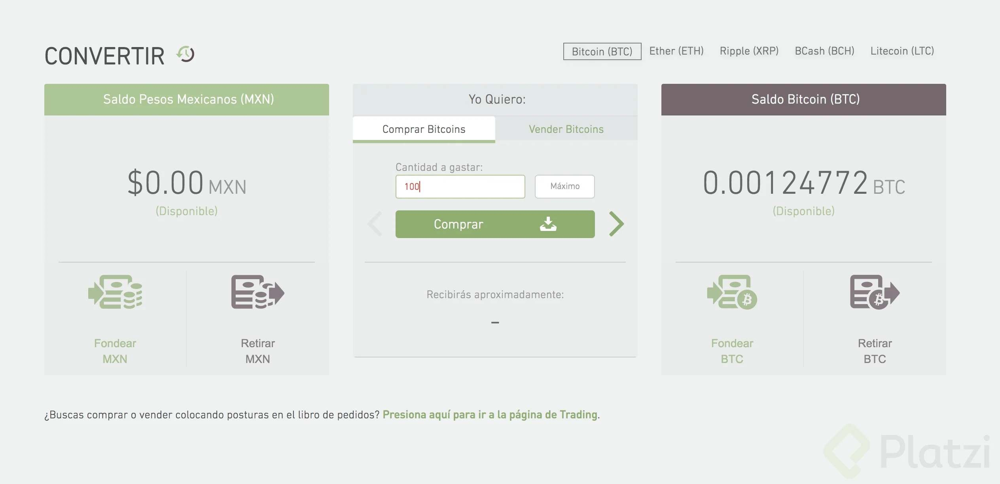

Economía digital¶
¿Cómo comprar Bitcoin y Criptomonedas?¶
Bitcoin es unas de las inversiones del momento, en Latinoamérica a diferencia de Estados Unidos no hay una solución 100% efectiva para comprar Bitcoin. En este artículo conocerás las diferentes opciones, el proceso para adquirir bitcoins y algunos consejos a la hora de comprar.
Comprar Bitcoin en Latinoamérica con Binance¶
Binance es una plataforma de inversión online, y una billetera en donde podemos almacenar nuestras criptomonedas de forma segura en el corto plazo. Recordemos que con las billeteras online no tenemos acceso a las claves privadas, pues pertenecen directamente al Exchange por lo que nunca será buena idea almacenar nuestro dinero por mucho tiempo en este tipo de billeteras, para ello tenemos otras opciones más seguras y que nos brindan control absoluto sobre nuestros cripto activos en el largo plazo.
El registro en Binance es bastante sencillo, sin embargo, el proceso de verificación de tu cuenta podría tardar un poco. Por lo que te invitamos a ser paciente y si el proceso llegase a extenderse, contactar al equipo de soporte para que pueda ayudarte lo más pronto posible.
Una vez completado el registro y activación de tu cuenta, así como la verificación de la misma ya podrás tener acceso a la interfaz de la plataforma y podrás recibir, enviar dinero, así como adquirir y vender tus criptomonedas.
Utilizaremos la Plataforma P2B de Binance para adquirir Bitcoin desde latinoamérica.
Selecciona la pestaña Comprar y BTC. Selecciona el método de pago que quieras, por ejemplo "Transferencia Bancaria" y tu moneda.
Luego de ello selecciona la oferta que se adapte a tus intereses y necesidades.
Transfiere el dinero directamente al vendedor. Asegúrate de realizar la transferencia de acuerdo con la información de pago proporcionada por el vendedor, dentro del límite de tiempo de pago. Es recomendable utilizar el chat para comunicarse con el vendedor.
Asegúrate de que has enviado el dinero al vendedor y luego haz clic en "Transferido, siguiente"
Haz clic en Confirmar. Por favor, no pulses este botón si no has realizado ninguna transacción. Esto va en contra de la Política de transacciones de usuarios P2P.
El estado de la orden se actualizará a ''En proceso de liberación''
¡Felicidades! Has completado un intercambio y tus bitcoins están en la billetera
Comprar Bitcoin en México con Bitso¶
Comprar Bitcoin en México es bastante sencillo con la plataforma de intercambio de Bitso.
Con Bitso comienzas creando una cuenta. Recomendación: Ingresar correctamente todos los datos personales que exijan sobre todo el CURP.
Una vez creada la cuenta pasarás por un proceso de verificación de número de teléfono celular.
Al final el proceso de verificación llegarás al panel del sitio de Bitso donde podrás ver la información general de tu cuenta y tendrás la opción de "Fondear" tu cuenta en Bitso con pesos mexicanos.
La verdad la plataforma de Bitso es bastante elaborada a nivel gráfico, me gusta mucho.
Antes de comprar Bitcoin debes fondear la cuenta, ellos ofrecen varios métodos para fondear tu cuenta de manera instantánea en la mayoría de los casos.
Al seleccionar un método de pago te aparecerá un mensaje de confirmación con datos para realizar la transacción.
Ya con pesos mexicanos en tu cuenta deberás intercambiar pesos a Bitcoin a través de la opción "Convertir".

En esta opción colocas la cantidad de pesos mexicanos que deseas convertir a Bitcoin y Bitso automáticamente te informará cuántos bitcoins recibirás.
Comprar Bitcoin desde cualquier parte de Latinoamérica con Localbitcoins.com¶
Localbitcoins es una opción mundial, muy fácil de usar pero no tan segura en todos los casos. Pero no te preocupes, acá te diré como evitar estafas a través de Localbitcoins con algunas recomendaciones.
Localbitcoins funciona similar a un servicio de anuncios clasificados, donde una persona sube un anuncio pero el servicio como tal no tiene nada que ver con el vendedor. La diferencia en Localbitcoins es que hay ciertos procesos de verificación que agregan una capa de seguridad a la transacción.
Registrarse es bastante sencillo y el proceso de verificación aún más, te recomiendo tener tu pasaporte a la mano para el proceso de verificación en línea.
En el proceso de verificación te pedirá verificar tu número de teléfono y tu identidad. Recomendación: Al momento de verificar tu identidad te pedirá subir una foto de tu pasaporte o cédula/tarjeta de identidad, usa tu pasaporte en la medida de lo posible y además deja la ventana o la pestaña del navegador abierta porque el proceso puede tardar.
Podrías comprar sin verificar la cuenta, pero los vendedores más confiables podrían no estar disponible porque restringen los intercambios para cuentas verificadas. También podría afectar la cantidad mínima o máxima de Bitcoin que puedes comprarle a un vendedor.
Una vez esté verificada la cuenta puedes proceder a buscar un anuncio que se adapte a la cantidad de dinero que quieras invertir en bitcoin.
En el campo Amount debes ingresar la cantidad que deseas invertir sin espacios, comas, puntos. Luego la moneda y el país. Por defecto detecta en que país te encuentras. En caso de que no, puedes seleccionar el país y la moneda con la cual deseas realizar la transacción.
Podrás observar todos los anuncios que se adaptan a lo que estás buscando, en este caso anuncios para comprar de manera online 30 mil pesos colombianos en bitcoins.
Algo importante a resaltar es que cada vendedor coloca el precio que desee así que podrás ver diferencias de precios.
Al analizar el listado de anuncios podrás encontrar, quién es el vendedor, el método de pago que está utilizando, por lo general es un banco, el precio en tu moneda local por cada Bitcoin y los límites de una transacción, es decir cuánto puedes comprar como mínimo y como máximo respectivamente. Recomendación: NO usar PayPal, Webmoney, Skrill o cualquier sistema online de pago de ese estilo porque son muy susceptibles a fraudes.
En la información del trader podrás ver, el nombre de usuario, la cantidad de transacciones y el % de feedback positivo de sus transacciones. Si está al 100% significa que el 100% de sus compras o ventas han sido satisfactoria.
También puedes ver un indicador verde que indica en cuántos minutos responde a partir del momento que se abra una orden de compra.
Algo importante a tener en cuenta es el perfil del vendedor. Puedes ingresar al perfil haciendo clic en el nombre de usuario, allí podrás ver la información del vendedor y con cuántos "partners" ha hecho transacciones, es importante que los números sean grandes, eso indicaría más actividad en la plataforma. También tener en cuenta que la identidad esté verificada.
Al momento de seleccionar un anuncio veremos más información del anuncio y un formulario donde podemos indicar la cantidad de dinero a invertir, lo que se recibirá en BTC y un campo de texto donde uno puede dejar un mensaje para el vendedor. Recomendación: Si estás comprando por transferencia bancaria, indicar en el campo de texto que banco deseas usar para agilizar la compra.
Es importante verificar qué bancos o método de pago recibe el anunciante, algunas veces en la descripción en la parte de la derecha deja un teléfono celular, cada vez que puedas puedes escribir por Whatsapp o llamar para tener más información.
Una vez enviada el trade aparecerá un chat, debes esperar a que el vendedor te responda con la información para pagar.
Si pagas por transferencia bancaria debes tomar un screenshot y subirlo al chat. Es importante siempre marcar como pagada la orden que abras.
Cuando abres una compra en Localbitcoins la cantidad que decides comprar se bloquea para el vendedor, es una medida de seguridad.
Consideraciones finales¶
Tanto Binance como Bitso y Localbitcoins cuentan con wallets, no necesitas abrir o instalar alguna wallet para poder comprar. Solo necesitarás una wallet cuando retires Bitcoin de alguno de estos servicios.
Si tienes dudas en algún servicio no temas en usar el sistema de soporte, algunos son un poco lento pero al final recibirás una respuesta que aclara tus dudas o si deseas puedes dejar tu duda acá en el artículo y en la medida de lo posible te responderé con la solución.
NO olvides activar 2FA o autenticación de dos pasos para todas las cuentas que tengas en estos servicios.
Recomendación final, investiga bien los costos para retirar BTC desde estos servicios así evitarás perder dinero a la hora de retirar BTC de tu cuenta.
Billeteras y Tipos de Billeteras¶
Antes de pensar en adquirir criptomonedas, es muy importante entender cómo podemos almacenarlas, en dónde y qué medio es más seguro de acuerdo a tus objetivos e intereses.
¿Qué es una billetera?¶
Las billeteras o wallets son software o programas que te permiten almacenar, enviar y recibir Bitcoin y criptomonedas. Su función es almacenar las claves privadas necesarias para proteger el saldo y transacciones registradas en una clave pública en la blockchain. Sin embargo, existen varios tipos de billeteras y es muy importante identificar cuál es más adecuada para ti.
Tipos de Wallets¶
- Billeteras de Escritorio: Las billeteras de escritorio están disponibles en la mayoría de sistemas operativos, incluyendo Windows, Linux, y Mac. Además de ello son billeteras con un nivel de seguridad muy alto, ya que sólo se puede acceder a ella a través del dispositivo en el que fue instalado el software. También proporcionan una serie de letras y números después de su instalación que son de utilidad si llegase a ocurrir algún problema con tu dispositivo, por lo que es muy importante que guardes con sumo cuidado este código pues con ello podrás reinstalar nuevamente tu billetera sin perder el acceso a tu dirección de Bitcoin y por tanto a tu dinero. Algunas billeteras de escritorio que puedes probar son:
Bitpay
* Billeteras de Hardware: Las billeteras de hardware incrementan el nivel de seguridad pues las claves privadas son almacenadas en una memoria USB o un dispositivo específicamente diseñado. Ejemplo: Ledger Nano, Trezor, etc. Este tipo de billeteras permite a los usuarios conectar la memoria USB a cualquier dispositivo, iniciar sesión, realizar transacciones y desconectar nuevamente, manteniendo nuestro dinero seguro. Es importante, por tanto, mantener los USB a salvo, además de seguir el método de respaldo correspondiente. Algunas billeteras de hardware que puedes probar son:
Trezor
* Billeteras App Móviles: Su funcionalidad y nivel de seguridad es similar al de las billeteras de escritorio. Sin embargo, en este caso se ejecutan en forma de aplicación en tu teléfono celular. También su funcionamiento es más accesible, pues tienes a la mano la posibilidad de ingresar a tu dirección, realizar transacciones. Es muy importante, además, respaldar muy bien la seguridad de tu dispositivo móvil, pues un tercero podría tener acceso a tu dinero si no cuentas con una buena gestión de seguridad. Algunas billeteras móviles que puedes probar son:
Coin Wallet
* Billeteras En Línea: Estas billeteras son propiedad de los exchanges o casas de cambio en su mayoría, por lo que sólo requerimos correo electrónico y contraseña para crear y acceder a ellas. En algunos casos, necesitas un proceso de verificación más complejo para poder validar tus datos y agregar una capa de seguridad, como el envío de tus documentos personales. Puedes acceder a ellas desde cualquier lugar y dispositivo con acceso a internet. Es importante contar con un buen protocolo de seguridad porque no tenemos un control total sobre ellas, teniendo en cuenta que son propiedad de los exchanges. Algunas billeteras en línea que puedes probar son:
Ahora que conoces cuales son los tipos de billeteras, si tu objetivo es adquirir criptomonedas pero te gustaría ver varias opciones de intercambios para adquirir bitcoin sin importar el lugar en el que te encuentres, en Buy Bitcoin WorldWide puedes escoger tu país de residencia además del método de pago que te gustaría usar y encontrarás varias opciones además de toda la información al respecto.
¿Cómo usar una Billetera?¶
En la clase anterior, te contamos acerca de los tipos de billeteras de bitcoin, su nivel de seguridad de acuerdo a tus objetivos e intereses y nuestras recomendaciones.
Una billetera o Wallet de bitcoin es el lugar en el que podemos gestionar nuestros activos criptográficos. Funciona como una cuenta bancaria, en donde puedes guardar tu dinero, enviar y recibir transacciones. Sin embargo, no funciona como una entidad bancaria tradicional pues es un sistema descentralizado por lo que el proceso de registro es mucho más sencillo, así como su accesibilidad.
Una billetera de bitcoin cuenta con dos elementos:
- La clave o dirección pública
- La clave o dirección privada
La clave o dirección pública es el código que podemos compartir a los demás usuarios para que puedan enviar dinero de forma exitosa a nuestra billetera, sin el riesgo de que puedan extraer nuestros fondos. A través de ella podemos recibir, consultar, y ver nuestros estados de cuenta.
La clave privada en cambio es un código que no podemos compartir con nadie, pues podrían con ella acceder a nuestros fondos y extraer nuestro dinero. Es de suma importancia guardarla en un lugar seguro y privado que nos asegure el control absoluto sobre nuestros cripto activos.
Realizando una transacción en una billetera online (Binance)¶
Binance es una plataforma de inversión online, y una billetera en donde podemos almacenar nuestras criptomonedas de forma segura en el corto plazo. Recordemos que con las billeteras online no tenemos acceso a las claves privadas, pues pertenecen directamente al Exchange por lo que nunca será buena idea almacenar nuestro dinero por mucho tiempo en este tipo de billeteras, para ello tenemos otras opciones más seguras y que nos brindan control absoluto sobre nuestros cripto activos en el largo plazo.
Registrarse en Binance¶
El registro en Binance es bastante sencillo, sin embargo, el proceso de verificación de tu cuenta podría tardar un poco. Por lo que te invitamos a ser paciente y si el proceso llegase a extenderse, contactar al equipo de soporte para que pueda ayudarte lo más pronto posible.
Una vez completado el registro y activación de tu cuenta, así como la verificación de la misma ya podrás tener acceso a la interfaz de la plataforma y podrás recibir, enviar dinero, así como adquirir y vender tus criptomonedas.

Para depositar tendrás un panel con toda la información, si tomamos la opción de depósito en BTC encontraremos nuestra clave pública con la que las personas pueden enviar dinero a nuestra billetera. Además de nuestro historial de transacciones recientes.
Para retirar de igual forma tendrás un panel, y en él solo tendrás que seleccionar la criptomoneda de tu preferencia para enviar el dinero respectivo, suponiendo que queremos enviar bitcoin, ingresar la dirección de BTC del destinatario, así como la cantidad de bitcoin o satoshis a enviar. Luego, llegará un correo electrónico de confirmación para terminar de validar la transacción y que el Exchange pueda procesarla, para que entre a la red y pueda llegar a nuestro destinatario.
Resumen
Enviar y recibir bitcoins o criptomonedas es un proceso sencillo, sin tantas restricciones como una entidad bancaria tradicional y accesibilidad para todas las personas. De acuerdo a nuestro interés u objetivo de inversión siempre tendremos opciones de billeteras y herramientas para almacenar, enviar, y realizar transacciones con nuestras criptomonedas.
Almacenamiento y Seguridad¶
El buen uso y almacenamiento de tus bitcoins y criptomonedas es fundamental, pues, aunque el ecosistema es muy seguro, un mal uso del mismo puede llevarnos a perder nuestro dinero. Para ello es muy importante seguir protocolos de seguridad que nos garanticen el control de nuestras criptomonedas.
Resumen
La seguridad del control sobre tus bitcoin y criptomonedas dependen de ti.
Sin importar con cual tipo de billetera cuentes, siempre respalda tus datos e información. Es muy importante mantener una copia de tus nombres de usuario, correo electrónico y contraseñas en un lugar seguro, recuerda que tus contraseñas deben ser lo más complicadas posibles, no repetirse y usar un gestor de contraseñas es una herramienta increíble para mantener la seguridad de tus criptomonedas.
Plataforma de Inversión¶
El interés de inversión en el Bitcoin y criptomonedas ha crecido de forma exponencial en el tiempo, debido a las fluctuaciones del precio además de la volatilidad suscitada desde sus inicios. Convirtiéndose por tanto en una increíble oportunidad para generar beneficios, con los conocimientos, medidas y entrenamiento necesario.
Por lo tanto, es fundamental saber qué plataformas de inversión cuentan con los requisitos y características necesarias para almacenar cierto porcentaje de nuestro dinero e invertir en criptomonedas.
Las mejores plataformas de inversión de criptomonedas son aquellas que ofrecen variedad de criptomonedas, comisiones bajas, liquidez, se encuentren reguladas por organismos de mercados financieros, además de una interfaz dinámica de análisis, operaciones y almacenamiento.
Binance¶
Es considerada la mejor plataforma de inversión de criptomonedas del mundo, además de brindar la opción de operar con apalancamiento y contar con muchas opciones para los inversores. Una de las primeras en liquidez y volumen además de una gran cantidad de cripto activos financieros como opción de inversión, comisiones bajas, garantías de seguridad superior a otros exchanges, y muchas otras características que la ubican en el top.
Bitfinex¶
Una de las plataformas pioneras de inversión en criptomonedas, fundada desde el 2012 y de las más relevantes del mercado. Cuenta con una gran cantidad de cripto activos financieros, así como gran liquidez y volumen. Su interfaz gráfica es de agrado para los usuarios al ser completamente personalizable, permitiendo la configuración de funciones y herramientas de inversión, haciendo por tanto la experiencia del inversor sencilla y satisfactoria.
Coinbase¶
Si bien no es una plataforma enfocada en trading, es uno de los proveedores más relevantes en el mercado de las criptomonedas desde el 2012. Está disponible en más de 30 países considerado uno de los portales más seguros para adquirir criptomonedas. Aunque no tiene una gran variedad de opciones de activos criptográficos puedes comerciar con los cripto activos más populares, además funciona como monedero digital web.
Kucoin¶
Si bien es una plataforma de inversión con pocos años en el mercado, ha demostrado ser una de las más relevantes brindando a sus usuarios la posibilidad de tener un portafolio de inversión en el corto plazo bastante distribuido debido a la amplia cantidad de cripto activos. Además de ello, su interfaz es fácil e intuitiva contando con buena liquidez y bajo costo en comisiones transaccionales y un atractivo sistema de recompensas a través de su moneda base.
Bitmex¶
Es la plataforma de inversión de criptomonedas con apalancamiento con más años en el mercado. En ella tienes la opción de operar hasta 100 veces con tu capital de inversión por transacción, sin embargo, no cuenta con posibilidad de operar muchos cripto activos, y su enfoque está principalmente en operar sobre bitcoin en ambas direcciones del precio, dando a los inversores la posibilidad de aprovechar todas las oportunidades de fluctuación en el precio en el corto plazo. Es importante destacar que operar con apalancamiento en las criptomonedas implica un riesgo enorme sobre tu capital de inversión, por lo que no es una opción válida o recomendada para los inversores principiantes.
¿Qué son satoshis?¶
Bitcoin - Divisa | Divisa – Bitcoin¶
Debido a la cotización del precio del Bitcoin, adquirir una unidad no es accesible para todas las personas. Sin embargo, podemos adquirir una fracción y obtener el equivalente en divisas debido a la capacidad de división que cada bitcoin tiene gracias al protocolo inicial definido por Satoshi Nakamoto.
¿Qué es un Satoshi?¶
Un satoshi es la medida mínima en la que se puede fragmentar un bitcoin, así pues 1 bitcoin es equivalente a 100 millones de satoshis, expresado a la inversa entonces 1 satoshi equivale a 0,00000001 BTC y el nombre está asociado al creador del bitcoin: Satoshi Nakamoto, quién definió así las reglas en el protocolo inicial del BTC.
Es de suma importancia conocer cómo hacer las conversiones de bitcoin a dólares y viceversa, pues de esa forma evitaremos transacciones con cantidades erróneas que podrían incurrir en pérdidas de dinero.
Existen herramientas que nos ayudan con el cálculo necesario a partir de la cotización actual del precio. Una de las más relevantes es la Calculadora de Criptomonedas de CoinmarketCap dónde podrás obtener de forma automática el cambio de divisas a satoshis, e incluso realizar el cálculo a partir de otras criptomonedas.
Divisas a Bitcoin (Dólares a Satoshis)¶
Puedes adquirir 100 USD en bitcoins, y para ello sólo debes tener la cotización actual del precio. Suponiendo que el precio promedio actual es de 9000 USD el equivalente en bitcoin sería 0.011 BTC correspondiente a 1.111.111 satoshis. Es decir, sólo tomamos el valor en USD y al dividirlo sobre el precio actual del cripto activo podremos obtener el equivalente en BTC para realizar de forma exitosa nuestras transacciones correspondientes.
Bitcoin a Divisas (Satoshis a Dólares)¶
Si cuentas con 0.1 BTC y deseas por tanto convertirlo a USD o dólares americanos, sólo debes contar con el precio de la cotización actual. Suponiendo que el precio promedio actual es de 9000 USD el equivalente de 0.1 BTC es de 900 USD. Es decir, sólo tomamos la cantidad de bitcoins o satoshis correspondientes y lo multiplicamos por el precio actual del criptoactivo para conocer el equivalente en dólares americanos.
Resumen
Bitcoin es el padre de las criptomonedas, por lo tanto, todas ellas determinan su valor en referencia al bitcoin. De esta forma entender el funcionamiento de los satoshis nos ayudará a entender el valor que se les asigna a las criptomonedas y así gestionar nuestras transacciones en el mercado de forma exitosa.
Fuente: Curso de Economía Digital: Bitcoin y Criptomonedas por Angela Ocando